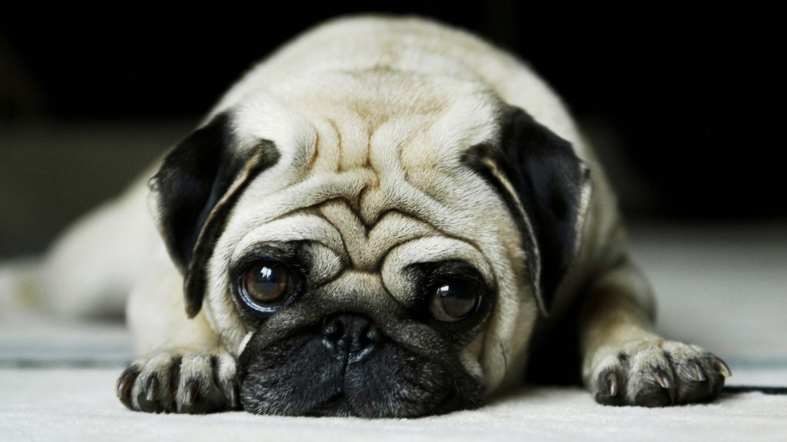

Čarostavitelství
Čarostavitelství bla je pro mě vlastně úplnou novinkou bla. Nejsem si úplně jistá, bla zda na to budu někdy mít mozek bla. Bla bla mám v tom ještě docela dost zmatek, protože často bla tápu ve značkách, které jsme se naučili a bla musím si je zpětně dohledat bla. A abych pravdu řekla, ani si nedokážu představit bla, jak já budu schopna vůbec něco takového vytvořit bla bla. Bum bác nevím co mám psát, ale ráda bych řekla, že mě Čarostavitelství i baví. Bez ohledu na to, bla jak to pro mě bude komplikované.
Hogwarts jako celek
Už je to nějaký pátek, co jsem poprvé vstoupila na hrad. Popravdě jsem nejdřív byla strašně rozčílená, protože jsem o projektu nevěděla vůbec nic a bylo to pro mě jako začarované bludiště, které se rádo mění. Úplně mě odrovnala nováčkovská soutěž, kdy jsem vůbec, ale vůbec netušila, co mám dělat a taky proč to mám dělat. Později jsem ale našla k hogwarts cestu a teď si ani nedokážu představit, že bych tohoto projektu nebyla součástí. Bum bác.
